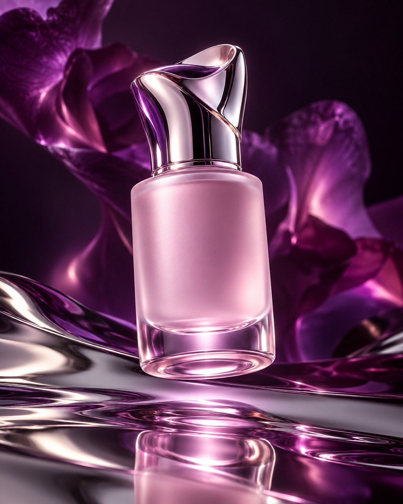

Dawn
Serum
A lightweight texture for the first moments of your morning ritual.
Quiet rituals. Expressive objects.
A considered edit for the moments that belong to you.

A small catalogue with room for each product, its details, and the ritual around it.
A lightweight texture for the first moments of your morning ritual.
A soft finishing touch for a routine with a little room to slow down.
A considered addition to the quieter part of your day.

How an object feels. Where it lives. The moment you reach for it. A beauty brand can be built around thoughtful details, with a website that gives them space.
Explore the everyday edit